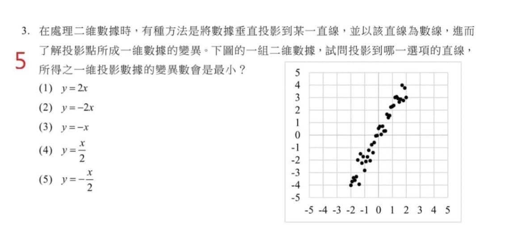
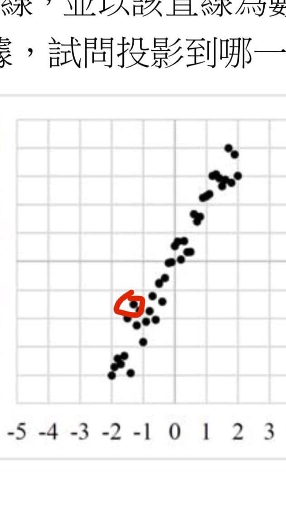

話說「111年學測第三題」
111年學測甫落幕，數學科的爭議最大。星媽一直希望我對這次考題提出評析，但完整周詳的討論需要一些篇幅，無奈最近公私繁忙無暇落筆，看來只能利用未來幾天年假伏案疾書了！
撇開這次題目難易的爭議，持平而論，這次學測數學科的命題著實用心，頗有新意。
美中不足 ，單選題第三題（下圖一）題目的條件敘述少了一句，使得這題的答案可能產生爭議！
乍看這是一道觀念題，只要解題者有清楚的概念，完全不需要計算：點列的回歸直線斜率為2，顯然對選項（5）中與此垂直，斜率為（-1/2）的直線作投影，分佈會最集中，瞬間秒殺！
許多程度好的同學都可輕鬆得分！
那這題有啥問題嗎？

舒宇宸副教授（成大）在他的FB上指出：若點列不等權，則答案便不只一組！
他特別造了一個例子來說明。
其實不難想像，調整各點權重可以得出無窮多種答案！
也可利用「極端化」將圖二中紅筆圈起的點賦予非常大的權重，答案選項便是（3）。
學測考場中的緊張氛圍，大概絕大多數的作答者都不會有時間想到更深層次的問題，但對於這麼重要的全國性考試，出題者或因疏忽而沒有在題目加上條件：
「各點的權重相等」
不能說不是一個瑕疵！
